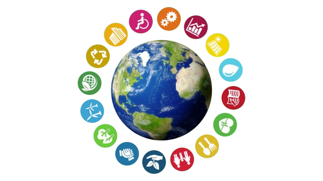
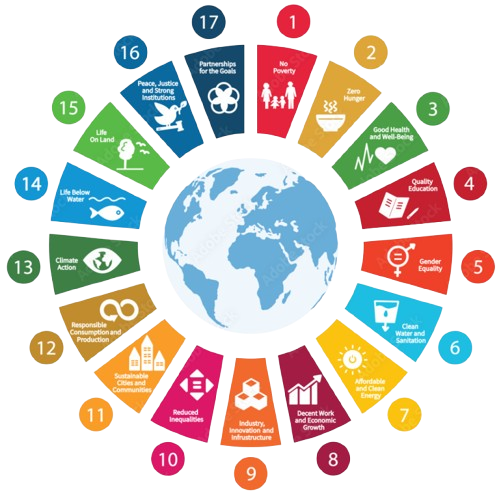
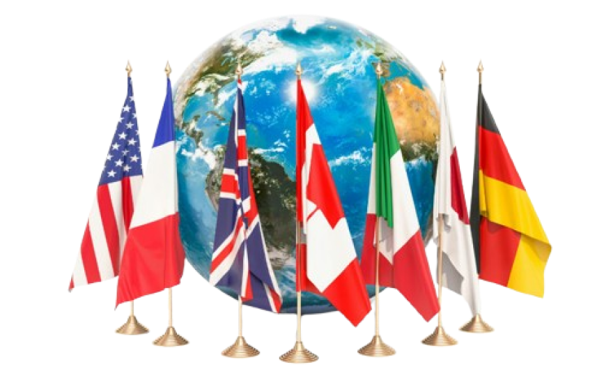

¿QUE SON LOS ODS?
Los Objetivos de Desarrollo Sostenible. El plan para lograr un futuro mejor y más sostenible para todos.
17 objetivos desarrollados cada uno en metas específicas que abordan los desafíos
globales que enfrentamos, incluida la pobreza, la desigualdad, el
cambio climático, la degradación ambiental, la paz y la justicia.

IMPORTANCIA GLOBAL
Los Objetivos de Desarrollo Sostenible (ODS) son fundamentales porque proporcionan un marco claro para
guiar el desarrollo sostenible a nivel global. Están diseñados para ayudar a los países y comunidades a
enfrentar desafíos como la pobreza y la desigualdad, promoviendo un mundo más justo donde todas las
personas tengan acceso a recursos y oportunidades básicas.

HISTORIA
Los Objetivos de Desarrollo Sostenible (ODS) fueron adoptados en septiembre de 2015 por 193 Estados
miembros de la ONU durante la Cumbre de Desarrollo Sostenible en Nueva York, como parte de un esfuerzo
global para erradicar la pobreza, proteger el planeta y asegurar la prosperidad para todos. Estos 17
objetivos y sus 169 metas surgieron de un proceso de consulta inclusivo, construido sobre los principios
de desarrollo sostenible establecidos en el Informe Brundtland de 1987 y los Objetivos de Desarrollo del
Milenio (ODM), y buscan abordar los desafíos sociales, económicos y ambientales de manera integral,
fomentando la cooperación internacional hacia un futuro sostenible y equitativo.
